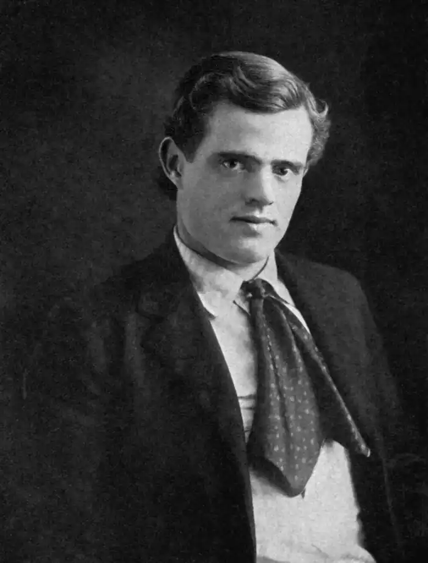
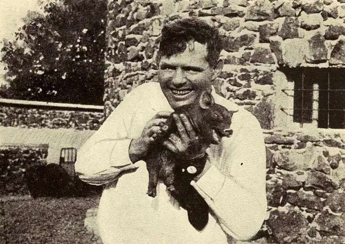

ДЖЕК ЛОНДОН
(1876-1916)
Народився 12 січня 1876 року в Сан-Франциско. При народженні одержав ім'я Джон Чейні, але вісім місяців по тому, коли мати вийшла заміж, став Джоном Гріффітом Лондоном. Мати письменника — Флора Уеллман — походила із заможної уельської родини, була розумною і начитаною дівчиною, яка закінчила коледж, училася музиці, але мала нервовий характер зі швидко мінливим настроєм. У двадцять років вона перехворіла на тиф і після хвороби, як говорили, у неї залишилося деяке "сум'яття в голові". Це призвело до того, що все своє життя Флора була дуже своєрідною жінкою, захоплювалась гаданням, спіритизмом і не приділяла належної уваги вихованню сина. Материнські обов'язки були Флорі не до душі. Їй ніколи було стежити за хлопчиком, який почав хворіти. За порадою лікаря родина переїхала в сільський район. Флора зайнялася пошуками годувальниці. Нею стала негритянка Дженні Прентіс, яка нещодавно втратила дитину. Вона стала для Джека не тільки годувальницею, а й прийомною матір'ю і всю свою невитрачену любов перенесла на маленького білого хлопчика. Лондон завжди з теплотою і ніжністю згадував свою чорну матір. Дитинство Лондона пройшло в Сан-Франциско. Він багато читав, уявляючи себе героєм пригодницьких романів. Джек став постійним відвідувачем місцевої публічної бібліотеки. Кожну книгу він буквально проковтував. Він читав уночі, читав ранком, читав, коли йшов до школи, читав по дорозі додому й знову йшов до бібліотеки за новою книгою. У школі щоранку учні співали хором. Одного разу, помітивши, що Джек мовчить, учителька відправила його до директора. Була довга і серйозна розмова, в результаті якої директор відіслав хлопчика назад до класу з запискою, у якій говорилося, що можна звільнити учня Лондона від співу, але замість того Джек повинен був писати твори щоранку протягом того часу, поки інші учні співали хором. Пізніше Джек Лондон приписував цьому покаранню свою здатність писати щоранку тисячу слів. У 13 років Лондон закінчив початкову школу, але до середньої школи ходити не міг: у родині не було грошей, щоб платити за навчання. А вже у 15 років Джек мав іти на фабрику, щоб матеріально забезпечити родину, бо його вітчим потрапив під потяг і став калікою. Постійне недосипання, втома й бажання хоч одного ранку відпочити і не піти на остогидлу роботу через роки спонукає всесвітньовідомого письменника на створення пронизливого і сильного оповідання "Відступник", герой якого після місяців тяжкої праці, що перетворила його майже на тварину, бунтує і замість димного цеху йде у поле, лягає у траву й вперше за довгий час зустрічає схід сонця (дитяче бажання автора реалізується у літературному персонажі). Юність Лондона припала на часи економічної депресії і безробіття, матеріальне становище родини все гіршало. До двадцяти трьох років він перемінив безліч занять: був "устричним піратом" (браконьєром); інспектором рибальського патруля; матросом на шхуні "Софі Сазерленд", де брав участь у полюванні на морських котиків; робітником на джутовій фабриці; заарештовувався за бродяжництво (брав участь у поході безробітних на Вашингтон); був старателем на Алясці під час "золотої лихоманки". Це були роки змужніння і набуття життєвого досвіду, що так знадобився Лондону у подальшій літературній діяльності. У 1893 році Джек Лондон узяв участь у літературному конкурсі газети "Сан-Франциско колл". Його нарис "Тайфун біля берегів Японії" зайняв перше місце й приніс авторові перший гонорар — 25 доларів (знаменно, що друге й третє місця отримали студенти Каліфорнійського та Стенфордського університетів). Це спонукало Лондона серйозно задуматися над подальшими перспективами. Життєвий досвід підказував, що людині фізичної праці важко, а інколи зовсім неможливо досягти успіху в житті, на противагу людині розумової праці, яка з роками не виснажується, а набуває розквіту, духовного розвитку. І Джек Лондон усвідомлено вирішує стати письменником. Для цього він займається самоосвітою, складає вступні іспити до Каліфорнійського університету й навіть успішно вчиться упродовж одного семестру (на більше не вистачало коштів). Подальше життя талановитого юнака пов'язане з інтенсивною самоосвітою і нещадною творчою роботою, спрямованою на опанування тяжкої письменницької діяльності, вироблення особистого стилю. Цей період життя письменника дуже яскраво змальовано Лондоном у автобіографічному романі "Мартін Іден"(1909). 1896 рік круто змінив життя Джека Лондона: на Алясці знайдено золото, починається так звана золота лихоманка, в якій бере участь і молодий письменник. Йому так і не судилося знайти золото після кількох років виснажливої праці, але справжнім скарбом для Лондона стають особисті враження і досвід цього своєрідного краю, що отримав назву в подальших творах — " Біла Безмовність". Аляска, стає літературним Клондайком письменника: він створює особистий, ні з чим незрівнянний світ важких випробувань, суворих природних умов, міцної людської дружби і любові, які долають будь-які перешкоди. Так звані північні оповідання принесли славу молодому автору. У 1900році виходить перша збірка оповідань "Син вовка", потім друга — "Бог його батьків" (1901) і, нарешті,— роман "Дочка снігів" (1902). Джек Лондон стає всесвітньовідомим письменником зі своїм особливим стилем, неповторною манерою письма, оригінальною проблематикою. У наступні сімнадцять років він випускав по дві, навіть по три книги на рік. Секрет надзвичайної популярності Джека Лондона полягає, за словами відомого американського літературознавця Вана Віка Брукса, у тій "свіжій, життєствердній інтонації" його творів, що "так контрастувала з загальною сентиментальною спрямованістю тодішньої американської літератури" і була прямим викликом "ретельно процідженому, підсолодженому молочку життєвих ілюзій", яким пригощали публіку автори масової белетристики. Захопившись ідеями К. Маркса і Ф. Енгельса (освоєння яких збіглося з особистою зацікавленістю письменника проблемами соціальної справедливості), Лондон у 1901 році вступає до соціалістичної партії. На той же час письменник захоплюється працями Г. Спенсера і Ф. Ніцше. Відголос уподобань Лондона тих часів можна побачити на сторінках роману "Мартін Іден" (1909), насичених політичними, філософськими та літературними дискусіями. Літературний і життєвий шлях Джека Лондона був складним. Він був одним з найвизначніших соціалістів Сполучених Штатів початку XX століття і залишався в той же час переконаним індивідуалістом. Він створив образи простих мужніх людей і водночас не був далекий від "своєрідної кіплінгівської пихатості", оспівував стійкість "білих золотошукачів" у сутичках з "Білою Безмовністю" Аляски. Його перу належать і насичені справжнім подихом життя романи і повісті, і ремісницькі вироби, недалекі та, іноді з присмаком расистських теорій. І все ж спостереження Лондона того періоду свідчать про глибоке розуміння творчої своєрідності різних письменників, про уміння поцінувати загальний стан сучасної американської літератури. Джек Лондон був одним з засновників анімалістичної традиції не тільки в американській, але і у світовій літературі. Зображення диких та домашніх тварин у Лондона позначається не тільки великою любов'ю до "братів наших менших", але й знанням світу тварин, їх поведінки і повадок. Найкращими серед анімалістичних творів, безумовно, були "Поклик предків" (1903), "Біле ікло" (1906), "Джеррі-островитянин" (1917), "Майкл, брат Джеррі" (1917). Саме собаки та вовки є найулюбленішими тваринами Джека Лондона (свій великий будинок у Місячній долині письменник назвав "Будинком Вовка"). Значним явищем американської літератури початку XX століття став роман Лондона "Морський вовк" (1904), що, з одного боку, розкриває зацікавленість письменника "сильною особистістю" (яким є капітан Вульф Ларсен), з другого боку, є найвиразнішою критикою і розкриттям згубності самої ідеї "сильної особистості" як антисоціальної. Результатом активної громадянської позиції і соціалістичних уподобань Джека Лондона була знаменита "Залізна п'ята" (1907) — роман-утопія, роман-попередження. Написаний у формі рукопису, знайденого у п'ятому віці "Ери Братства людей" і присвяченого подіям 1912-1932 років (періоду повної перемоги соціалізму). Головний герой — Ернест Евергард — все та ж сама сильна, мужня, вольова людина, як і герої "північних оповідань", але з революційними прагненнями й демократичними ідеями. У романі автор виступає з прямим попередженням можливого фашистського майбутнього людства. Одним з найкращих творів Джека Лондона вважається роман "Мартін Іден" (1909), присвячений долі талановитої особистості в буржуазному суспільстві. Автобіографічний образ Мартіна Їдена стає прикладом великих здібностей людини з народу. Простий матрос, завдяки надлюдській наполегливості й природному таланту, стає відомим письменником. Роман став своєрідним гімном творчим можливостям людини. Проблеми спрощення, втечі з міст — носіїв соціальних конфліктів, повернення до землі, до сільськогосподарської праці набувають сили й художнього відтворення у найкращому романі пізнього періоду "Місячна долина" (1913). Наприкінці життя Лондон тяжко хворіє на уремію і для зменшення болів приймає морфій, кожного разу підвищуючи дозу. У ніч на 22 листопада 1916 року він був знайдений мертвим у своєму кабінеті в маєтку в Глен-Еллен (штат Каліфорнія). На нічному столику було знайдено ліки й папірець з розрахунками нової, більш сильної дози морфію, яка виявилась смертельною. Що це було — трагічна випадковість чи усвідомлений крок тяжко хворої людини — залишилось невідомо. Але якщо згадати роман "Мартін Іден" і останній вчинок головного героя, можна з великою долею впевненості говорити про самогубство великого американського письменника. "Мартін Іден" (1909) Роман Джека Лондона "Мартін Іден" (1909) починається З опису першого візиту головного героя у респектабельний буржуазний будинок сімейства Морзів, де він познайомився із сестрою студента Артура (якого він нещодавно врятував у вуличній бійці), також студенткою університету Руф'ю. Ця "бліда, невагома істота з великими одухотвореними блакитними очима, з масою золотого волосся" з першої ж хвилини справила незабутнє враження на Мартіна, і не тільки своєю зовнішністю, але й гарним знанням поезії, умінням легко й вільно викладати свої думки, зі знанням справи говорити про мистецтво та літературу.